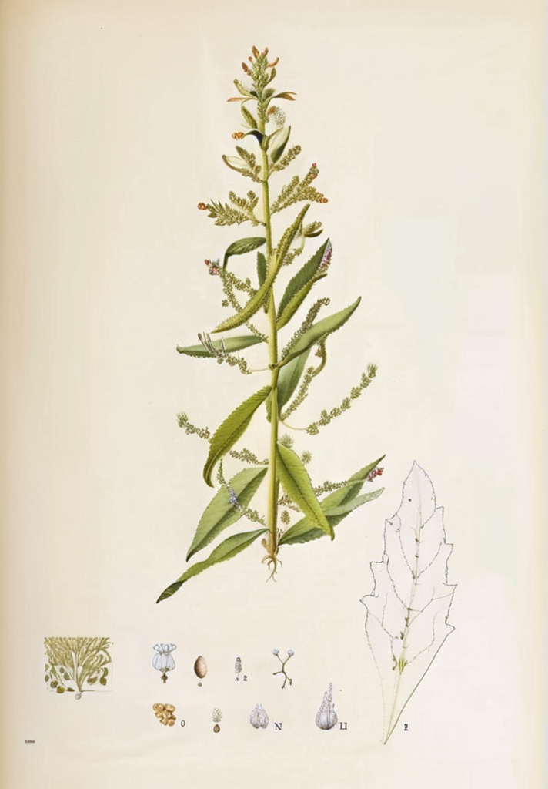

Chenopodium quinoa
Quinoa
Quinoa
La Chenopodium quinoa, conocida como quinua o quinoa, es un cultivo andino de grano que ha sido cultivado en los Andes peruanos y bolivianos desde hace más de 7 000 años. La FAO la ha reconocido por su alto valor nutricional y contribución a la seguridad alimentaria.
Para las civilizaciones preincaicas e incaicas, la quinoa era un alimento sagrado. Los incas la llamaban "chisaya mama" o madre de todos los granos. Su capacidad de crecer en condiciones extremas de altitud y clima la convirtió en un alimento fundamental para los pueblos andinos.
Clasificación Botánica
| Familia | Amaranthaceae |
|---|---|
| Género | Chenopodium |
| Especie | quinoa Willd. |
| Origen | Altiplano andino (Perú, Bolivia), 2 500-4 000 msnm |
| Partes usadas | Granos (semillas) |
Compuestos Activos
El grano es rico en proteínas de alto valor biológico (contiene todos los aminoácidos esenciales), fibra dietética, vitaminas (del complejo B, E), minerales (magnesio, hierro, zinc, fósforo) y compuestos fenólicos (ácidos ferúlico y caféico). Las saponinas en la cubierta externa requieren lavageado antes del consumo.
Usos Tradicionales
En la medicina tradicional andina, la quinoa se considera un alimento fortalecedor y reconstituyente. La medicina popular la utiliza en periodos de convalecencia, para la alimentación infantil y como complemento durante el embarazo y la lactancia por su perfil nutricional completo.
Evidencia Científica
Repo-Carrasco et al. 2003 Un análisis nutricional confirmó el alto contenido de proteínas (12-16%) y el perfil completo de aminoácidos esenciales en variedades peruanas de quinoa.
Vega-Gálvez et al. 2010 Los compuestos fenólicos de la quinoa mostraron capacidad antioxidante en estudios de laboratorio, contribuyendo a su estabilidad oxidativa.
Precauciones
La quinoa es generalmente segura como alimento. Las saponinas en la cáscara pueden tener sabor amargo y propiedades irritantes; el lavado repetido del grano antes de la cocción las elimina. Personas con enfermedad celíaca pueden consumir quinoa, ya que naturalmente no contiene gluten. Consulte a un profesional de salud si tiene alergias a otros cereales.